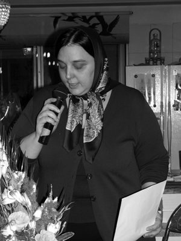

پذيرش > اخبار > جایزه حقوق بشر برای سوسن طهماسبی فعال حقوق بشر و زنان در ایران


 جایزه حقوق بشر برای سوسن طهماسبی فعال حقوق بشر و زنان در ایران جایزه حقوق بشر برای سوسن طهماسبی فعال حقوق بشر و زنان در ایران
15 مهر 1389 - - نسخه قابل چاپ
تغییر براي برابری: سازمان دیده بان حقوق بشر اعلام کرد: شش مدافع شجاع و تسلیم ناپذیر حقوق بشر به دلیل فعالیت های خستگی ناپذیرشان، مفتخر به دریافت جایزه معتبر آلیسون دفرجیس در ماه نوامبر سال 2010می شوند. کلیه این شش نفر با تهدیدهای خشونت آمیز اساسی و یا زندان مواجه شده بودند، ولی باز هم به صحبت صریح در این زمینه و اقدام برای ایجاد دنیایی که مردم در آن رها از خشونت، تبعیض و ظلم زندگی کنند، ادامه می دهند.
این جایزه بعد از مرگ غم انگیز دکتر آلیسون دفرجیس، در دوازدهم فوریه سال 2009 در یک سانحه هواپیمایی در نیورک، به یاد او نامگذاری شده است. آلیسون دفرجیس مشاور ارشد شعبه آفریقای سازمان دیده بان حقوق بشر برای تقریبا دو دهه بود.
دفرجیس، برجسته ترین کارشناس جهانی در مسائل رواندا و کشتار جمعی سال 1994 و اتفاقات بعد از آن بود.
جایزه سالانه دیده بان حقوق بشر، گرامیداشت تعهد ستودنی و چشمگیر او و دفاع از حقوق بشر است. این جایزه تجلیل و تقدیری است از شجاعت افرادی که زندگیشان را صرف راه دفاع از شاءن و حقوق دیگران می کنند.
علاوه بر سوسن طهماسبی فعالان حقوق بشری که این جایزه را دریافت می کنند عبارتند از :
حسام بهجت، مصر: وی به عنوان بنیانگذار و مدیر سازمان ابتکار مصری برای حقوق شخصی، از حقوق و آزادی های مدنی در مصر دفاع می کند. او به صراحت علیه نقض آزادی های مذهبی و حق حریم خصوصی توسط دولت صحبت می کند.
النا ملاشینا، روسیه: او به عنوان یک روزنامه نگار محقق در روزنامه نووایا گازیتا، مهم ترین روزنامه مستقل روسی، حقایقی را درباره نقض حقوق بشر و فساد گسترده دولت افشا می کند. برغم تلاشهای روسیه برای خاموش کردن انتقادات و مخفی نگاه داشتن این نقض ها، میلاشینا همچنان صریح و رک، گزارش هایی از ناپدید شدن های اجباری، اعدام های غیررسمی و شکنجه منتشر می کند. او همچنین در حال اجرای تحقیقاتی درباره قتل بی شرمانه مدافع سرشناس و برجسته حقوق بشر چچن، ناتالیا استمیروا، و خواستار پاسخگویی بالاترین مقام در این زمینه است.
یوسف مولوجتا، اتیوپی: او دبیرعمومی سابق شورای حقوق بشر اتیوپی _ سازمان برجسته نظارت بر حقوق در اتیوپی_ است که در حال مبارزه برای بقا تحت قانون سرکوبگر جدیدی است که فعالیت های حقوق بشری سازمان هایی را که منابع مالی خارجی دریافت می کنند، توقیف می کند. هنگامی که شورای حقوق بشر اتیوپی مورد تهدید قرار گرفت، مولوجتا برای پناهندگی سیاسی در ایالات متحده اقدام کرد، جایی که هم اکنون در آن به صحبت های صریحش درباره واقعیات پشت پرده وجهه و نمای دمکراتیک دولت اتیوپی، ادامه می دهد.
استوا نماندا، کامرون :او پزشک و رئیس سازمان حقوق بشری آلترناتیوهای-کامرون است که صراحتا علیه قوانین ممنوعیت رفتار همجنسگراها صحبت می کند. در آفریقا، بیشتر کشورها غرق در این اندیشه اند که همچنان کنش های همجنس ها، جرم و جنایت محسوب می شود و در برخی موارد مستحق مجازات مرگ هستند.
لیو شیاابو،چین: او یکی از صریح ترین منتقدان دولت چین است که بعد از اعتراض های صلح آمیز میدان تیانانمن در سال 1989، یک سال و نیم از عمرش را در زندان گذراند و در سال 1996، به دلیل انتقاد از سیاست چین در قبال تایوان و دالائی لاما، سه سال دیگر را هم در زندان گذراند. او سال گذشته برای مشارکت در نوشتن منشور 08_ یک پتیشن برای بزرگداشت 60سالگی اعلامیه جهانی حقوق بشر_ به یازده سال زندان محکوم شد. لیو کیاابو، استاد سابق دانشگاه، به تازگی نامزد جایزه صلح نوبل شده است.
سوسن طهماسبی و دلیل انتخاب او

سوسن طهماسبی، فعال جامعه مدنی و حقوق زنان و از اعضای بنیانگذار کمپین یک میلیون امضا است. او با دو دهه سابقه فعالیت اجتماعی، اکنون با هدف توانمندسازی جامعه مدنی ایران با تاکید بر مسائل و حقوق زنان فعالیت می کند. او آموزش هایی را در زمینه مدیریت و ایجاد صلح انجام داده است و به تسهیل همکاری بین جامعه مدنی ایران و جامعه مدنی بین الملل ادامه می دهد. او یکی از اعضای بنیانگذار کمپین یک میلیون امضا است؛ کمپینی که مورد تقدیر جهانی قرار گرفته است. این کمپین برای پایان دادن به قوانین تبعیض آمیز علیه زنان فعالیت می کند.
سوسن طهماسبی در خرداد 1385 دادگاهی و در اسفند ماه 1385 در تهران بازداشت شد. بار نخست به اتهام برگزاری تجمع مسالمتآمیز زنان علیه قوانین تبعیضآمیز به یکسال و نیم حبس تعلیقی و شش ماه حبس تعزیری محکوم شد. بار دوم به همراه 33 نفر دیگر به اتهام شرکت در تجمع زنان در برابر دادگاه بازداشت شد و بعدا از اتهام وارده تبرئه شد. چندین بار از خروج او از کشور ممانعت بهعمل آمده است . دیده بان حقوق بشر با اشاره فعالیت ها، بازداشت وممنوع الخروجی سوسن طهماسبی اعلام می کند:« ديده بان حقوق بشر از سوسن طهماسبی به دلیل تعهدش در راستای ترفیع و ارتقای جامعه مدنی ایران و اولویت و تبدیل حقوق زنان به یک اولویت ملی در ایران قدردانی می کند».
سوسن طهماسبی، فعال حقوق بشر و حقوق زنان، از بنیان گذاران کمپین یک میلیون امضای برای تغییر قوانین تبعیض آمیز، و سردبیر بخش انگلیسی سایت "تغییر برای برابری" از سایت های کمپین یک میلیون امضاست. کمپین یک میلیون امضا و سایت کمپین نیز بارها جوایزی جهانی را دریافت کرده اند که از جمله آنها می توان از جایزه جهانی حقوق زنان در سال 2009 نام برد.
سایت تغییر برای برابری، دریافت جایزه آلیسون دفرجیس را به همراه و همکار خود در مبارزات برابری خواهانه برای زنان تبریک می گوید. چنین جوایزی به افرادی که شایسته دریافت آن هستند صدای حقوق بشر، حقوق زنان و صدای انسان های عدالت خواه را درجهان رساتر می کند.
ارسال به
بالاترین
،
توییتر
،
فریندفید
،
فیسبوک
در همين بخش :
 پروین ذبیحی برنده جایزه حقوق بشری سازمان غيردولتى اتريشى سودويند شد پروین ذبیحی برنده جایزه حقوق بشری سازمان غيردولتى اتريشى سودويند شد
پخش کارت پستال و بروشور در روز جهانی زن در تهران
تمدید زمان برای امضای بیانیهی جمعی از فعالان زن به مناسبت هشت مارس
مجوزی که در نطفه خفه شد
بیش از 2000 امضا در اعتراض به تبعیض های آموزشی به مجلس تحویل داده شد
ديگر بخش ها :
طرح یک میلیون امضا
|
مقالات
|
سایت نوشته ها
|
اخبار
|
گزارش كمپين
|
گفت و گو
|
علیه سکوت
|
كوچه به كوچه
|
نامه های شما
|
گزارش ویژه
|
گفتگو با اعضا
|
ویژه سالگرد کمپین
|
تصویر برابری
|
دل آرام علی
|
تریبون
|
مقالات
|
تاریخ شفاهی
|
خارج از چارچوب
|
کتابخانه
|
درباره کمپین
|
کمپین در شهرها
|
کمپین در بند
|
صدای تغییر
|
ویژه 22 خرداد
|
لایحه حمایت از خانواده
|
گالری
|
عشا مومنی
|
امیر یعقوبعلی
|
خدیجه مقدم
|
راحله عسگری زاده و نسیم خسروی
|
پروین اردلان،جلوه جواهری، مریم حسین خواه، ناهید کشاورز
|
زینب پیغمبرزاده
|
سعیده امین، سارا ایمانیان، محبوبه حسین زاده، ناهید کشاورز و همایون نامی
|
احترام شادفر
|
نسیم سرابندی زاده،فاطمه دهدشتی
|
وبلاگ مهمان
|
پرونده خرم آباد
|
دستگیری ها
|
مریم مالک
|
پرستو اللهیاری
|
مهرنوش اعتمادی
|
سمیه رشیدی
|
Other Languages
|
همراهان
|
«فراخوان کمپین ده روز با بهاره هدایت»
| English
|